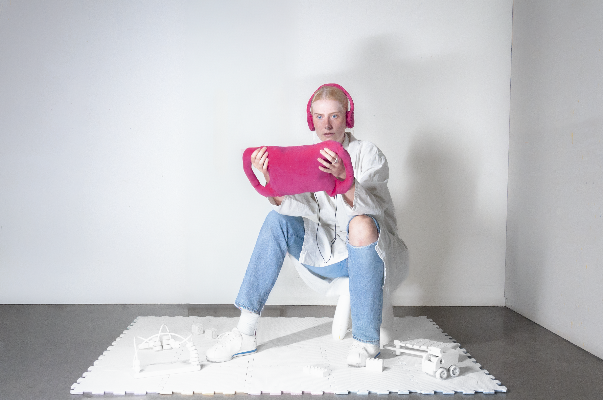

▸
▸
www.Daycare is a video installation that investigates the phenomena of children’s content made on YouTube. The viewer is placed in a lab-like nursery, and exposed to video on an iPad that emulates different levels of stimuli that would appear in children’s content, but removed from context.
Cocomelon is the biggest kids YouTube channel, posting seemingly innocent colourful and upbeat nursery rhymes. Content farms, like Cocomelon make their content free, in exchange for running ads on their videos. Making children perform an act of labour by viewing. This way, they are incentivised to produce the most attention grabbing and attention retaining content as possible. This installation comes from various comparative studies between Cocomelon and children’s broadcast TV. Comparing clip length, audio intensity, colour saturation and movement. All these, when stimuli is high, can impact children’s learning, by deregulating dopamine levels and limiting other kinds of stimuli.
This installation de-centres the themes and stories within the content, by pixilating and distorting the audio, to make the differences obvious. In a lab centred environment, the audience become the experiments, instead of the children whom normally are the ones exposed. How one is affected.
see excerpt of video: here
These are exerpts from the comparatives studies between traditional broadcast TV programming and Cocomelon videos. These illustrate diffrent levels of stimulating factors in video content, removing context. In here clip length and color saturations were compared in layouting evenly captured frames a selection of videos (3 minutes). Audio intesity is illustrated in melodic range spectograms that illustrate pitch intensity over time.
